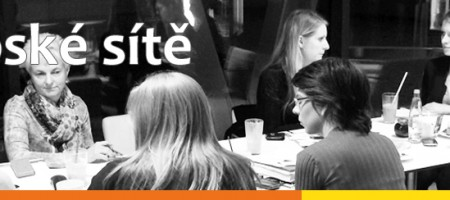

Práce Archive
Polabské sítě – networking v praxi

Ráda bych Vám představila projekt Polabské sítě, jehož hlavním cílem je síťování našich členů, pořádání vzdělávacích seminářů, vítány jsou jak podnikatelky tak i ženy které zvažují podnikání nebo nepodnikají vůbec – zkrátka aktivní lidi:) Skupina funguje
Co se dá dělat z domu – část 1. Diskuze a průzkumy
Pokud dostáváte nějaké sociální dávky, asi se vám nevyplatí pracovat, protože co vyděláte, o to samé byste přišly na dávkách. Zvláštní systém… Pokud však toto řešit nemusíte, je zde několik možností, co může člověk dělat a mít